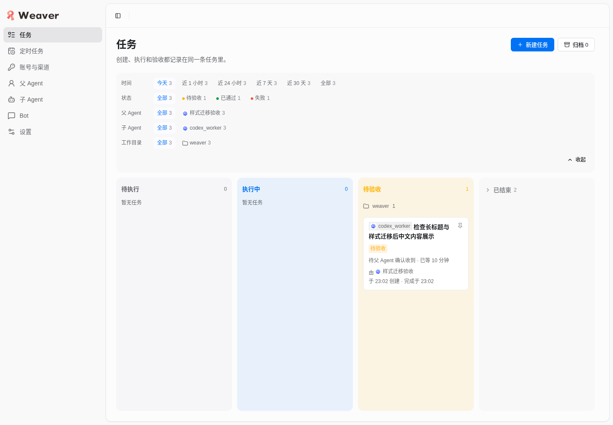
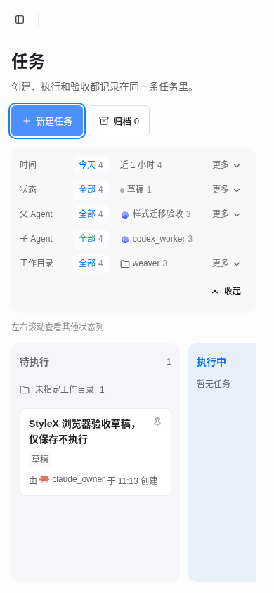
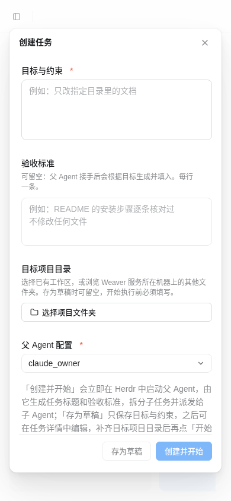
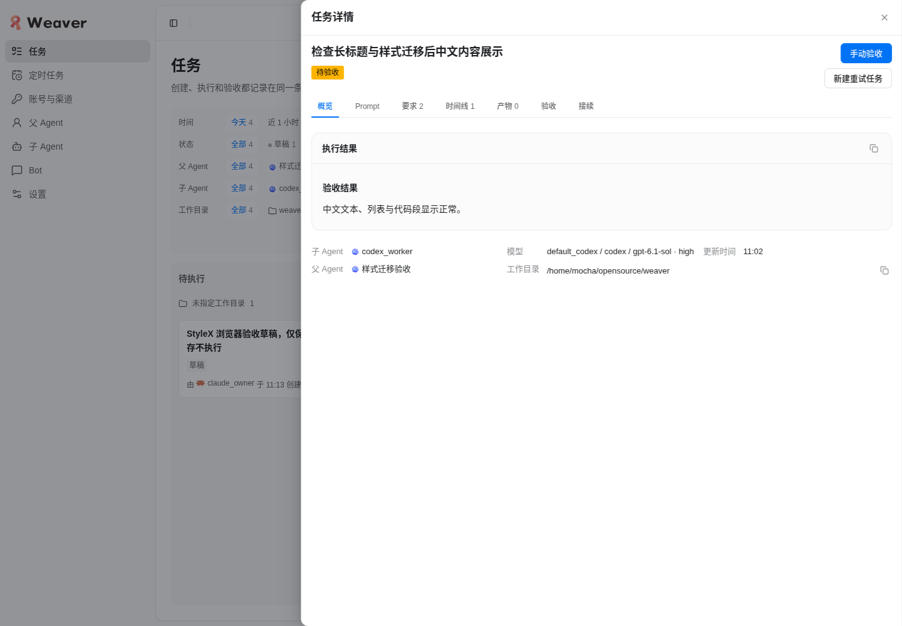

通过：依赖迁移、渲染测试、完整构建、真实浏览器冷启动与生产模式复验。
2026-10-26 · @lobehub/ui 6.9.0 · StyleX 0.19.1 · Node ≥ 22.22.0
| 检查 | 实际结果 |
|---|---|
| 渲染层测试 | 557 通过，0 失败 |
| CLI 相关测试 | 6 通过，0 失败 |
| 类型检查与完整构建 | 通过；构建后 Node CLI Web 服务可启动 |
| 依赖与样式 | antd / antd-style 依赖图为空；业务样式使用 StyleX |
| 开发模式 | 全新 Vite 缓存真实 Chrome 冷启动；七页 × 390 / 1024 / 1440 宽度，无页面级横向溢出 |
| 生产模式 | 构建后 CLI 与静态资源七页通过；草稿和时区重启后保留；控制台及页面脚本错误为空 |
交互覆盖任务草稿保存、置顶、Markdown 详情与复制、标签页、定时计划验证与禁用保存、渠道表单、父 Agent 数值保存、子 Agent 开关、Bot 工作空间选择、时区搜索保存、移动导航与弹窗焦点恢复。原始指标见 summary.json。




本任务开发、预览与生产服务已停止，Chrome 与专属 profile 已释放。仅回收任务临时根下可丢弃的验收夹具；项目原有数据和共享 Weaver 数据保留。会话前已有改动及未跟踪文件未纳入提交。